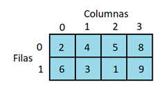
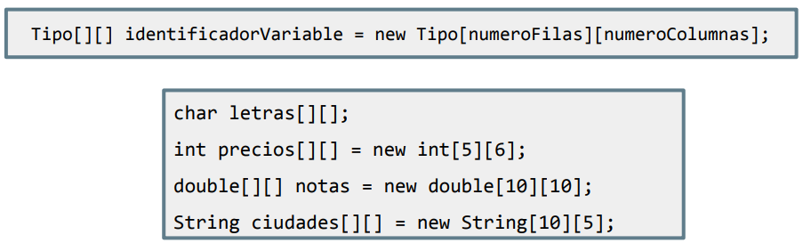
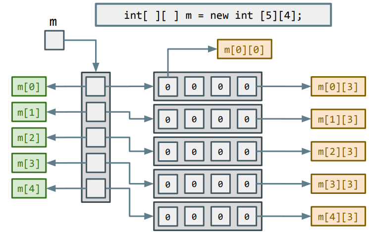
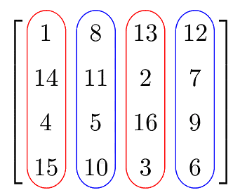
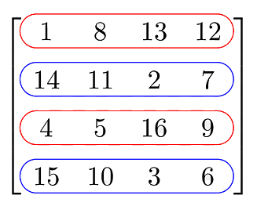

Introducción a las matrices
Una matriz o array multidimensional es aquel que para acceder a una posición concreta, en vez de utilizar un único valor como índice (por ejemplo, v[2]), se utiliza una secuencia de varios índices (m[2][4]). Cada índice sirve como coordenada para una dimensión diferente. En esta unidad nos centraremos en los de 2 dimensiones.

La sintaxis es como la de los vectores o arrays, pero se le añaden unos corchetes adicionales:

y en este caso, también da igual si los corchetes se escriben junto al tipo de dato o junto al identificador (nombre) de la matriz. A tu gusto.
Como puedes ver en el ejemplo de la creación, una matriz se puede interpretar como una tabla cuya primera dimensión serían las filas y la segunda serían las columnas.

También se puede ver como una representación de diferentes vectores juntos, ya sean horizontales o verticales:
 